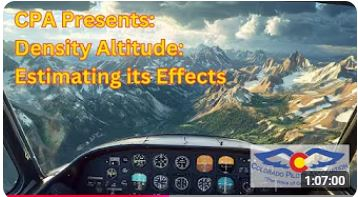

Welcome! This site is your source for the KochChart software tool. This tool compares various estimating methods (including, but not limited to, the Koch Chart) for assessing the impact of density altitude on take-off and rate-of-climb performance. In addition, the tool can estimate the effects of wind, runway slope and runway surface on take-off distance.
The algorithms used in the software were originally developed for light, single-engine, normally aspirated (i.e., not-turbocharged) piston aircraft. They are not applicable to other types of aircraft.
This is a free educational tool created to raise awareness about the significant effect density altitude has on aircraft performance, and is especially important for pilots flying at high-elevation airports.
You can download the KochChart software at this page. Look for the release withafter the release name.
The software was featured in a Colorado Pilot's Association webinar,
which can be viewed here:
.
The software discussion starts around the 32-minute point in the video.
Currently, the software is only available for Windows.